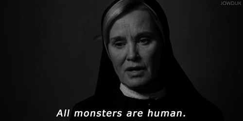

American Horror Story é uma série de televisão norte-americana de terror-drama criada e produzida por Ryan Murphy e Brad Falchuk. Descrita como uma série antológica, cada temporada é concebida como uma minissérie independente, seguindo um conjunto de personagens e ambientações distintas, e um enredo com o seu próprio “começo, meio e fim".
A série é transmitida pela emissora estadunidense FX. A primeira temporada estreou em 5 de outubro de 2011 nos Estados Unidos e 8 de novembro de 2011 no Brasil. Em 2017, foi anunciado que a série seguirá até a nona temporada, sendo exibida até 2019.
American Horror Story tem sido bem recebida pelos críticos de televisão e fãs. O elenco é geralmente elogiado, especialmente Sarah Paulson e Evan Peters. A série atrai sistematicamente altos índices de audiência para a rede americana FX, com sua primeira temporada sendo a maior nova série da TV à cabo de 2011.
A primeira temporada marcou 62 de 100 no Metacritic baseado em 30 críticas. Ken Tucker do Entertainment Weekly concedeu ao episódio piloto um B+, declarando que "AHS é praticamente tudo susto, o tempo todo: um lote inteiro de gritos , solavancos, rostos triturados, comportamento psicótico, e bebês mortos". Hank Stuever do The Washington Post diz na sua crítica que "Exagerar as coisas é uma das falhas da marca de Murphy, mas esse show tem um estilo cativante e vertiginoso de repugnar". Nem todas as críticas foram favoráveis: Alan Sepinwall do HitFix deu para a série D−, dizendo: "Esta tão longe do topo que o topo é um pontinho microscópico no espelho retrovisor, e tão cheio de sons estranhos, pontos turísticos e personagens que você provavelmente não vai esquecer, mesmo que muitos gostariam de esquecer". Mary McNamara do Los Angeles Times declarou: "...se desmorona em campo...em mais de uma ocasião" mas também fez notar que é "difícil tirar o olho do show".
A segunda temporada, American Horror Story: Asylum, tem recebido desde o início críticas geralmente positivas e marcou 65 de 100 no Metacritic baseado em 23 críticas. James Poniewozik da revista Time declarou: "AHS: Asylum parece ser mais focada, igualmente frenética. Também está maravilhosamente realizada, com uma visão tão detalhada do cenário da instituição dos anos 60 que você pode sentir o cheiro do ar viciado e do incenso". Maureen Ryan do The Huffington Post disse "É para o crédito dos escritores, diretores e o elenco de Asylum que a dor emocional dos personagens muitas vezes se sente tão real quanto sua incerteza e terror". Verne Gay do Newsday deu para a série uma classe C, declarando que "tem alguns bons efeitos especiais, mas não muita história para pendurá-los". Porém, Linda Stasi do New York Post achou que a temporada foi "exagerada", acrescentando que "eu preciso entrar [em um hospício] por minha conta após duas horas dessa loucura".
Foi anunciado em 7 outubro de 2014, que American Horror Story produziria uma série derivada intitulada American Crime Story. Murphy também dirigiu a primeira temporada, que teve 10 episódios. Como a série original, cada temporada de American Crime Story será uma história diferente. A primeira temporada é chamada The People v. O.J. Simpson: American Crime Story e narra a vida dos homens e mulheres envolvidos com o caso em tribunal infame. A série foi escrita por Scott Alexander e Larry Karaszewski.
Como uma série antológica, American Horror Story conta com uma abertura diferente para cada temporada, onde as imagens retratam sobre a história que será mostrada na temporada. Todas as aberturas têm sua música de abertura parecida, todas baseadas na da primeira temporada, mas acrescentado sons com relação ao tema. A única temporada até o momento que não possui a abertura é a Roanoke(sexta temporada), mas a melodia familiar, porém diferenciada, aparece nos crédtos finais.